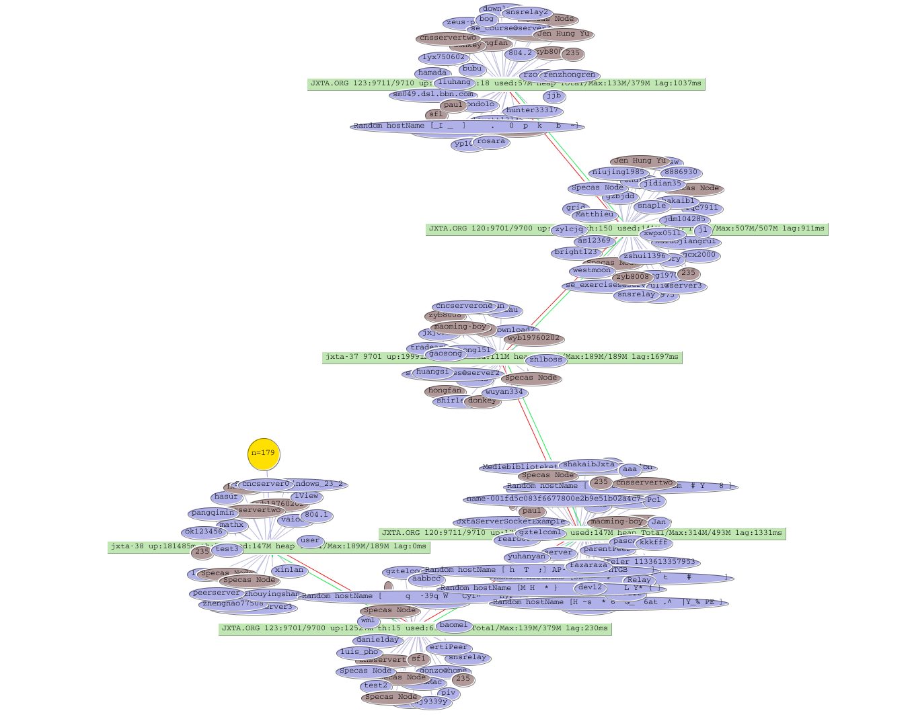

| Mission | JXTNetMap a visual network utility, which utilizes a protocol defined by iViewRendezvous to provide visual representation of the JXTA network. Such utility can be a valuable debugging, and network monitoring tool. The visual aspect of this utility is accomplished through use of the open source project ' TouchGraph'. There are also other interesting visual libraries such as WilmaScope which could provide a 3D perspective to the virtual network. |
| Goals/Objectives | - Provide visual network representation
- Display more info about nodes
- Add triggers to re-query the network
- Invoke other network functions
- Provide a visual application plugin
- etc.
|
| Contributors | - Mohamed Abdelaziz
- Jean-Christophe Hugly
- Mike Duigou
- Dave Bryson
- Mathieu Jan
|
| | Status |  - A functional visual tool completed
- Add other visual controls, and display dialogs
- Define a credential element to determine access privileges (not assigned)
- Add other network commands, and other display functions (PeerInfo, etc.) (not assigned)
- Define plugin interface, and implementation (UI component, Shell, etc.) (not assigned)
- Provide a Web interface to a cache of current network view (not assigned)
|
| Build instructions | - Check out or download the following project : platform
- Follow the build instructions for the platform
- Check out jxtanetmap sources
- run make or ant to compile
|
| Running Instructions | - Run a rendezvous which supports the JxtaNetMap protocol
- Run client side visual tool
or
note:It is not recommended to run a rendezvous using ant |
|
|
{kind=link}